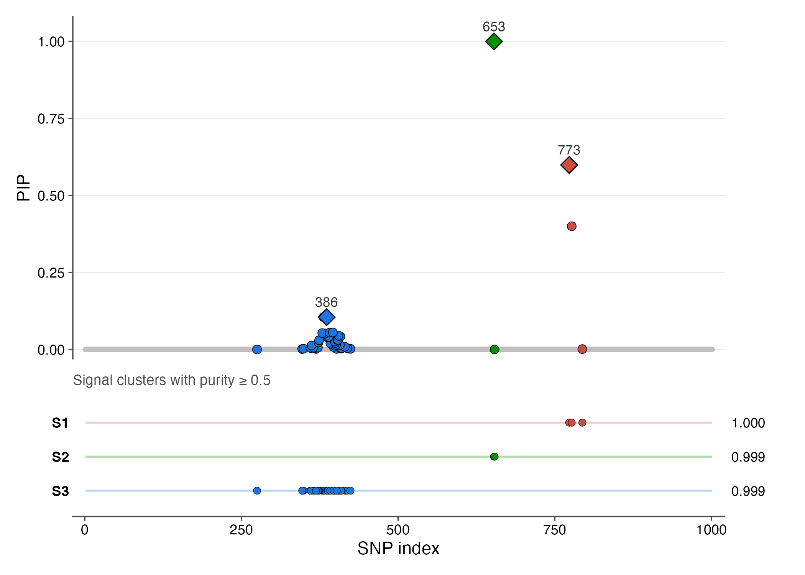
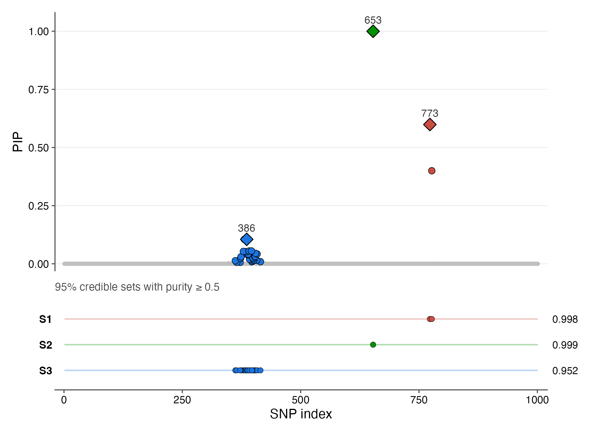

Installation
Install the development version of DAPS from GitHub.
# install the package via devtools
install.packages("devtools")
devtools::install_github("wnbo9/DAPS")
# load the package
library(DAPS)DAPS with Individual-level Data
Example data
We use the N3finemapping data from susieR:
genotypes of 574 individuals at 1001 SNPs in one region, with a
simulated phenotype that has three causal SNPs.
Running DAP-S
daps() takes the genotype matrix X and
phenotype y. L is the maximum number of causal
effects allowed in the region.
rst <- daps(X, y, L = 10)
names(rst)
#> [1] "pip" "prior" "models" "twas_weights" "info"
#> [6] "sets" "variants"The result is a list with the following elements:
| Element | Description |
|---|---|
pip |
Variant-level posterior inclusion probabilities |
prior |
Variant-level prior inclusion probabilities |
models |
Plausible model configurations and their posterior probabilities |
twas_weights |
TWAS weights (default is NULL) |
info |
Additional details: complete signal clusters, CPIP, per-signal PIPs, stored models and LD |
sets |
Desired signal clusters (default) or credible sets |
variants |
Variant-level table of SNPs in each signal cluster or credible set (fastENLOC-style) |
The rst$pip gives the posterior probability of each
variant being causal.
head(rst$pip)
#> [1] 2.373537e-18 2.448098e-19 5.223550e-19 1.030485e-18 3.586387e-19
#> [6] 6.906588e-19
data.frame(pip = rst$pip[true_causal], row.names = true_causal)
#> pip
#> 403 0.03128841
#> 653 0.99965846
#> 773 0.59883743The rst$models lists the plausible model configurations
evaluated by DAP-S, with their log10 Bayes factor, log10 prior, log10
unnormalized posterior, and posterior model probability:
head(rst$models)
#> model log_bf log_prior log_posterior posterior_prob
#> 1 773 + 653 + 386 22.55530 -9.434512 13.120788 4.660885e-02
#> 2 777 + 653 + 386 22.65183 -9.434512 13.217320 5.821041e-02
#> 3 794 + 653 + 386 19.95270 -9.434512 10.518184 1.163763e-04
#> 4 773 + 654 + 386 18.99990 -9.434512 9.565391 1.297395e-05
#> 5 777 + 654 + 386 19.17763 -9.434512 9.743114 1.953416e-05
#> 6 773 + 622 + 386 18.44675 -9.434512 9.012243 3.630145e-06Signal clusters and credible sets
By default (coverage = NULL), DAPS reports
signal clusters. A signal cluster is a group of
correlated SNPs that together represent a single association signal: the
data show that one of them is likely causal, but cannot tell which. Each
cluster contains SNPs whose pairwise absolute correlation is at least
min_abs_corr (default 0.5).
rst$sets
#> $sets
#> $sets$S1
#> [1] 773 777 794
#>
#> $sets$S2
#> [1] 653 654
#>
#> $sets$S3
#> [1] 386 381 396 391 379 384 383 405 408 389 387 388 404 403 374 399 373 400 392
#> [20] 401 407 362 398 415 397 365 372 368 360 366 367 361 419 410 409 349 424 402
#> [39] 369 347 275
#>
#>
#> $purity
#> min.abs.corr mean.abs.corr median.abs.corr
#> S1 0.8092507 0.8701495 0.8196254
#> S2 0.5586652 0.5586652 0.5586652
#> S3 0.5190701 0.9287444 0.9515526
#>
#> $set_index
#> [1] 1 2 3
#>
#> $coverage
#> [1] 1.0000000 0.9997981 0.9990981
#>
#> $min_abs_corr
#> [1] 0.5
#>
#> $requested_coverage
#> [1] "signal clusters"For signal clusters, coverage is the cluster PIP (CPIP):
the posterior probability that the cluster contains a causal SNP. For
credible sets, it is instead the summed within-signal PIP of the SNPs in
the set. daps_plot() visualizes the results. The top panel
shows the PIP of each SNP, and the bottom panel shows the signal
clusters (or credible sets) with their coverage.
daps_plot(rst)
Signal clusters enable the construction of credible sets at any level
,
using get_set() without refitting. For example, the 95%
credible sets
()
are:
rst_cs <- rst
rst_cs$sets <- get_set(rst, coverage = 0.95)
rst_cs$sets
#> $sets
#> $sets$S1
#> [1] 773 777
#>
#> $sets$S2
#> [1] 653
#>
#> $sets$S3
#> [1] 386 381 396 391 379 384 383 405 408 389 387 388 404 403 374 399 373 400 392
#> [20] 401 407 362 398 415 397 365 372
#>
#>
#> $purity
#> min.abs.corr mean.abs.corr median.abs.corr
#> S1 0.9815726 0.9815726 0.9815726
#> S2 1.0000000 1.0000000 1.0000000
#> S3 0.8686309 0.9640176 0.9720711
#>
#> $set_index
#> [1] 1 2 3
#>
#> $coverage
#> [1] 0.9987765 0.9996585 0.9523328
#>
#> $min_abs_corr
#> [1] 0.5
#>
#> $requested_coverage
#> [1] 0.95
daps_plot(rst_cs)
DAPS with Sufficient Statistics
DAPS can also run on sufficient
statistics:
,
,
and
.
This is useful when individual-level data cannot be shared. Here we
compute them from centered X and y.
X_c <- scale(X, center = TRUE, scale = FALSE)
y_c <- y - mean(y)
XtX <- crossprod(X_c)
Xty <- as.numeric(crossprod(X_c, y_c))
yty <- sum(y_c^2)
rst_ss <- daps_ss(XtX, Xty, yty, n, L = 10)
rst_ss$sets$sets
#> $S1
#> [1] 773 777 794
#>
#> $S2
#> [1] 653 654
#>
#> $S3
#> [1] 381 386 396 391 379 384 383 405 408 389 387 388 404 403 374 399 373 400 392
#> [20] 401 407 362 398 415 397 365 372 368 360 366 367 361 419 410 409 349 424 402
#> [39] 369 347 275DAPS with Summary Statistics
A common scenario in genetics is having only GWAS summary
statistics. daps_rss() takes z-scores
z and an LD matrix R, along with the sample
size n if available. Alternatively, effect size estimates
bhat and their standard errors shat can be
supplied instead of z.
ss <- susieR::univariate_regression(X, y)
z <- ss$betahat / ss$sebetahat
R <- cor(X)
rst_rss <- daps_rss(z = z, R = R, n = n, L = 10)
rst_rss$sets$sets
#> $S1
#> [1] 773 777 794 800 776
#>
#> $S2
#> [1] 653 654
#>
#> $S3
#> [1] 381 386 396 391 379 383 384 405 408 389 387 388 403 404 374 399 373 400 392
#> [20] 401 407 362 398 415 397 365 372 368 360 366 367 361 419 410 409 349 424 402
#> [39] 369 347 275Session information
sessionInfo()
#> R version 4.4.2 (2024-10-31)
#> Platform: aarch64-apple-darwin20
#> Running under: macOS 26.5.1
#>
#> Matrix products: default
#> BLAS: /System/Library/Frameworks/Accelerate.framework/Versions/A/Frameworks/vecLib.framework/Versions/A/libBLAS.dylib
#> LAPACK: /Library/Frameworks/R.framework/Versions/4.4-arm64/Resources/lib/libRlapack.dylib; LAPACK version 3.12.0
#>
#> locale:
#> [1] en_US.UTF-8/en_US.UTF-8/en_US.UTF-8/C/en_US.UTF-8/en_US.UTF-8
#>
#> time zone: America/Detroit
#> tzcode source: internal
#>
#> attached base packages:
#> [1] stats graphics grDevices utils datasets methods base
#>
#> other attached packages:
#> [1] DAPS_1.0.0
#>
#> loaded via a namespace (and not attached):
#> [1] sass_0.5.0 generics_0.1.4 lattice_0.22-6
#> [4] digest_0.6.39 magrittr_2.0.5 evaluate_1.0.5
#> [7] grid_4.4.2 RColorBrewer_1.1-3 fastmap_1.2.0
#> [10] plyr_1.8.9 jsonlite_2.0.0 Matrix_1.7-1
#> [13] reshape_0.8.10 mixsqp_0.3-54 scales_1.4.0
#> [16] textshaping_0.4.0 jquerylib_0.1.4 cli_3.6.6
#> [19] rlang_1.3.0 zigg_0.0.2 crayon_1.5.3
#> [22] susieR_0.15.0 withr_3.0.3 cachem_1.1.0
#> [25] yaml_2.3.12 otel_0.3.0 tools_4.4.2
#> [28] dplyr_1.2.1 ggplot2_4.0.4 Rfast_2.1.5.2
#> [31] vctrs_0.7.3 R6_2.6.1 matrixStats_1.5.0
#> [34] lifecycle_1.0.5 fs_2.1.0 htmlwidgets_1.6.4
#> [37] ragg_1.5.0 irlba_2.4.1 pkgconfig_2.0.3
#> [40] desc_1.4.3 mr.ash.alpha_0.1-43 pkgdown_2.2.0
#> [43] RcppParallel_5.1.11-2 pillar_1.11.1 bslib_0.12.0
#> [46] gtable_0.3.6 glue_1.8.1 Rcpp_1.1.2
#> [49] systemfonts_1.1.0 xfun_0.62 tibble_3.3.1
#> [52] tidyselect_1.2.1 rstudioapi_0.17.1 knitr_1.52
#> [55] farver_2.1.2 htmltools_0.5.9 patchwork_1.3.2
#> [58] labeling_0.4.3 rmarkdown_2.32 compiler_4.4.2
#> [61] S7_1.0.0